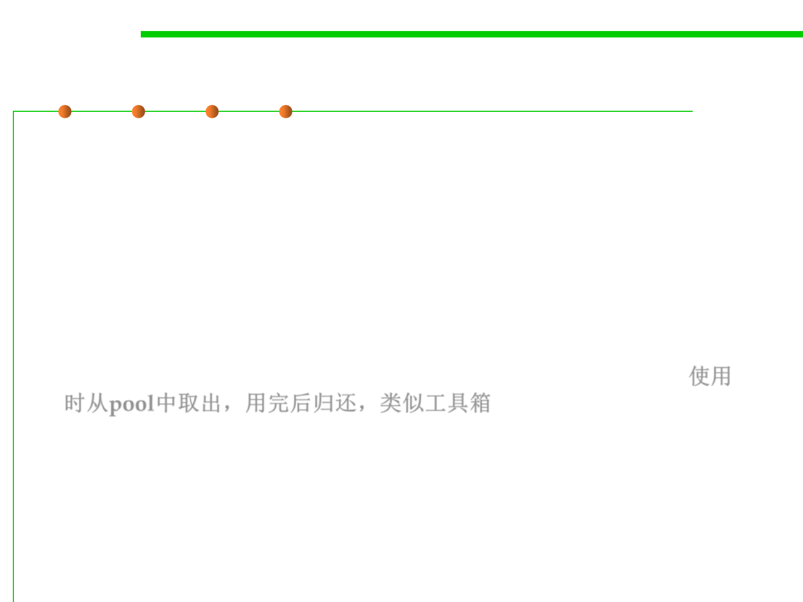

Object Pool Pattern
8.3 Code Tuning for Performance Optimization
▪ The object pool pattern is a software creational design pattern that
uses a set of initialized objects kept ready to use – a "pool" – rather
than allocating and destroying them on demand.
▪ E.g., database connection pool, printer pool
▪ A client of the pool will request an object from the pool and perform
operations on the returned object.
▪ When the client has finished, it returns the object to the pool rather
than destroying it; this can be done manually or automatically. 使用
时从pool中取出，用完后归还，类似工具箱